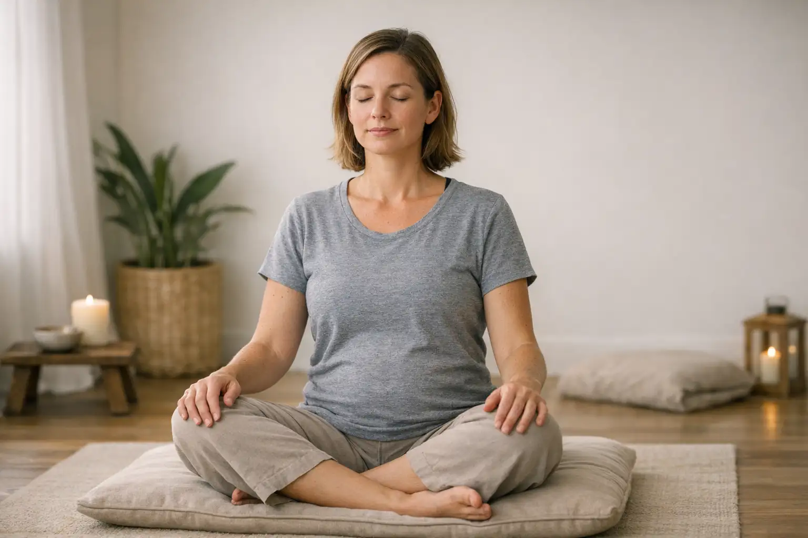

Learn the science of breathwork and how intentional breathing can support physical and mental wellbeing.
Breathing is something we all do without thinking, but how you breathe can make a real difference to your health. When you breathe deeply and slowly, you send signals to calm your nervous system—lowering heart rate and reducing stress hormones. In contrast, fast and shallow breathing can make anxiety and tension worse.
Scientific research shows that practicing purposeful breathwork activates the parasympathetic nervous system, which is responsible for rest and relaxation. This not only helps reduce stress but also improves your focus, boosts mood, and even supports your immune system. Athletes, therapists, and meditators use breathwork to sharpen concentration, manage pain, and enhance recovery.
A common mistake is thinking that deep breathing is only for yoga or meditation experts. In reality, anyone can learn foundational techniques and experience benefits within minutes. Another misunderstanding is that you need elaborate breathwork routines to feel a change—often, just a few conscious breaths are enough to shift your state.
Now that you know why breathwork matters, you’re ready to explore how breathing patterns affect you emotionally and physically. In the next lesson, you'll learn to become aware of your own breathing and notice the subtle ways it influences your daily experience.
Which of the following statements is supported by current science about breathwork?
Discover how to notice your natural breathing patterns and identify signs of shallow or stressed breathing.
Before you can change your breathing, it’s vital to understand how you currently breathe. Breath awareness is about observing the rhythm, depth, and location of your inhale and exhale in daily life. Are you mostly breathing into the chest, or do you feel your belly move with each breath? Do your breaths speed up when you’re rushed, or slow down when you’re at ease?
A simple exercise is to sit comfortably, place one hand on your chest and another on your belly, and notice which area rises more with each inhale. Do this for a minute while breathing normally. Repeat the exercise at different times—such as before a stressful meeting or after a workout—to see how your breath changes with your mood and activity.
A frequent mistake is rushing through this process and trying to “fix” your breath right away. Many people become self-critical if they notice their breathing isn’t smooth. Remember, awareness comes before change. Another misconception is thinking there’s a perfect way everyone should breathe all the time. Breath naturally shifts during activity, rest, or emotion.
In the next lesson, you’ll learn basic techniques to shift from shallow, stressed breathing to deeper, calmer patterns for real-time relief and focus.
What is the main goal of breath awareness exercises?
Master belly breathing, a technique that calms your system and supports energy and focus.
Diaphragmatic breathing, or 'belly breathing,' is a core breathwork method in which you intentionally engage your diaphragm—a dome-shaped muscle beneath your lungs—to draw in air deeply and efficiently.
To try this technique, sit comfortably and relax your shoulders. Place one hand on your chest and the other on your belly. Slowly inhale through your nose so that your lower hand rises while your upper hand stays mostly still. Exhale gently through your mouth or nose, feeling your belly fall. Repeat this process for 5–10 slow breaths.
This technique stimulates the vagus nerve, which tells your body to relax. Many people use it to manage anxiety, prepare for sleep, improve digestion, and sharpen focus.
A common mistake is taking in too much air at once or tensing the shoulders. Another misconception is that your chest shouldn't move at all—some movement is natural, but most breath should originate from your belly area. If you feel dizzy, pause and return to normal breathing before trying again.
Try belly breathing for a minute whenever you need a quick reset. In the next lesson, you’ll learn faster-paced techniques to boost energy or prepare for activity.
What is the main muscle you use in diaphragmatic (belly) breathing?
Practice several essential breathwork patterns tailored for relaxation, energy, or improving mind-body awareness.
Now that you understand and can practice belly breathing, it’s time to use other proven breathwork patterns for specific goals. The first, '4-7-8 breathing,' is excellent for calming anxiety and supporting sleep. Inhale for 4 counts, hold for 7, then exhale slowly for 8. Repeat four times—this activates your relaxation response and slows mental chatter.
'Box breathing' is a favorite among athletes and public speakers for managing pre-performance nerves. Inhale for 4 counts, hold for 4, exhale for 4, and hold out for 4, forming a rhythmic, square pattern. This steadies emotions and anchors your attention.
If you need a quick boost, try 'stimulating breath,' often called bellows breathing. Inhale and exhale rapidly through the nose, keeping your breaths short and equal in length, for about 15 seconds. This can wake up your mind and body but should be used with caution—don’t perform it if you feel dizzy, and avoid it at bedtime.
A common pitfall is choosing the wrong technique for your goal—for example, using stimulating breath when you want to unwind before sleep. Another is forcing breathholds longer than is comfortable, which can cause stress instead of relaxation.
As you practice these techniques, pay attention to which methods best suit your needs throughout the day. Up next, you’ll discover how to build a simple, sustainable breathwork routine.
Which breathwork practice is best for quickly calming nerves and promoting relaxation?
Learn how to build breathwork into your daily life by creating a routine that fits your unique schedule and needs.
The best way to enjoy the lasting benefits of breathwork is to make it a consistent habit. Successful routines are simple, realistic, and tied to moments in your day that already exist. Consider starting your morning with a minute of belly breathing or winding down in the evening with 4-7-8 breathing. Some people find it helpful to practice box breathing before stressful meetings or after work to reset.
Consistency is more important than quantity—just a few dedicated minutes each day can lead to noticeable improvements in mood, stress levels, and overall wellbeing. Set scheduled reminders on your phone or leave cues like a sticky note on your mirror.
Beginners often try to do too much at once and lose motivation. It’s better to focus on one or two techniques, gradually adding new patterns as the basics feel natural. Another misconception is believing breathwork is “all or nothing.” Even missing a day isn’t a setback.
Keep a simple journal or app diary to log your breathing exercises and note how you felt before and after. This not only motivates you but also helps you see gradual progress. In the next (and final) lesson, you'll learn how to evaluate your progress and deepen your practice for long-term benefits.
What’s the recommended way to start a breathwork habit as a beginner?
Master common challenges and learn how to safely progress as you make breathwork a lasting part of your life.

As you deepen your practice, you may encounter occasional discomfort, such as lightheadedness, frustration, or difficulty focusing. These are common and usually resolve as your skills grow. If you feel dizzy, pause the practice, breathe normally, and try again later with shorter sessions.
If you’re dealing with illnesses like asthma or respiratory issues, consult a healthcare provider before diving into repetitive or intense breathwork techniques. For those with anxiety or trauma history, breathwork can sometimes trigger uneasy feelings—if this happens, simplify the techniques or reduce practice length, focusing on gentle belly breathing.
It’s easy to become discouraged if you don’t feel instant results. Breathwork is a gradual journey that offers cumulative benefits—be patient with yourself and celebrate any positive shifts, however small.
When you’re ready for more, consider exploring guided audio recordings, participating in live online breathwork groups, or working with qualified breath coaches. These options can keep your practice fresh and deepen your understanding.
Next, continue exploring, tracking progress, and expanding your toolkit as you become more confident. Breathwork, when tuned to you, is a powerful lifelong tool for calm and energy.
If you feel dizzy or uncomfortable during breathwork, what should you do?
Congratulations on completing this breathwork course! You’re now ready to put these practical techniques into everyday life.
Use the button below to take the next step, or start over and run through the course again.
FREE Breathwork app, no credit card requiredDownload the information in this course to keep and refer back to